Shreyo Debnath
Product Designer
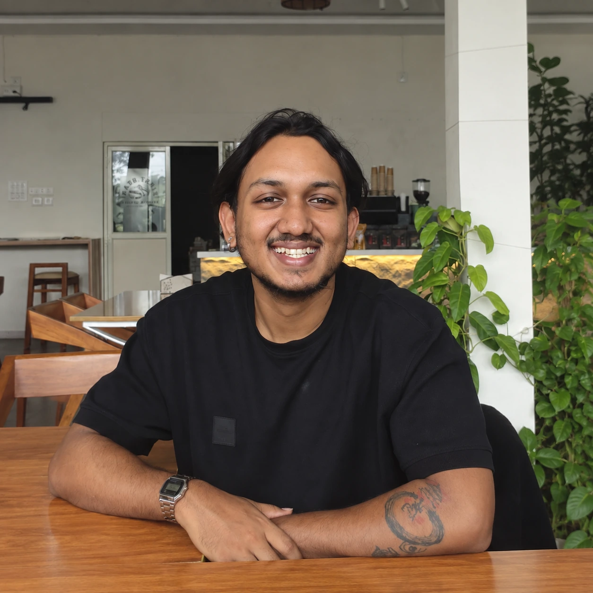
I am also a comic nerd
I am a designer with about 4 years of experience donning hats all the way from Product to Brand to Motion and now to even Development. I work with all the essence of design I absorb. I drive performance, engagement, sales and make people tell great stories about the companies I work for.
Design, for me, is poetry told through visuals. I just happen to be a good poet.
Experience
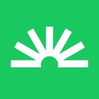
Product Designer · Jul 2025 – Present · SF, USA (Remote)
- Worked across ID Protection, Rent Reporting, Referral Flow 3.0, Freemium, and Bill Saver: research, wireframing, hi-fi, stakeholder presentations, and handoff
- Built Competitor Hub (S3, RDS, EC2), replacing a locked FigJam; shipped 2 AI-powered Figma plugins; evaluated 4+ AI development tools
Visual Designer · Jan – Jul 2025 · Apprenticeship · Bangalore, Hybrid
- Redesigned employee onboarding and created new internal visual style for Bright Money 2025; mapped the complete in-app UX flow
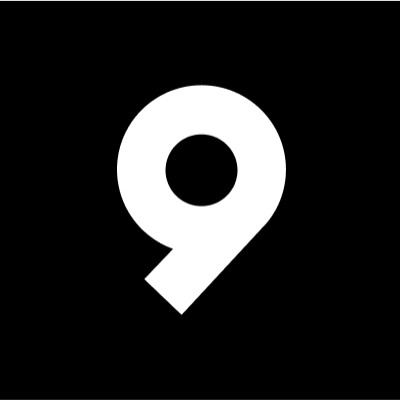
Visual Design & Strategy Intern · 3 months
- Designed the brand identity for Ninecamp Ventures, the mark and system, from scratch
- Led the website launch covering IA, wireframes, and hi-fi; made marketing collaterals for Boha, Dirty Jungle, and Dear Donna
Visual & UI/UX Design Intern · 11 months
- Designed the INUP-I2I identity for a MeiTY India joint venture between IIT-G, IIT-B, and IISc Bangalore
- Redesigned the Primary Healthtech website for their updated design language; print collaterals recognized by the Government of Assam
Graphic Design Intern · 4 months
- Made social media posts and marketing materials for the brand
Marketing Graphic Designer · Freelance · 5 months
- Made marketing graphics and video content for social media campaigns
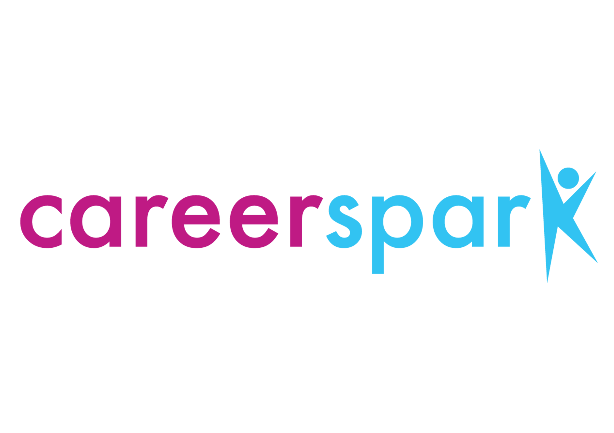
Social Media Designer · Intern · 8 months
- Video content creation and social media design for the brand's digital channels
Case Studies
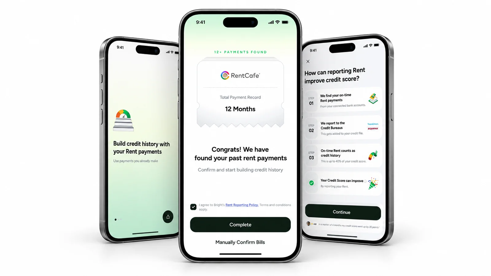
Rent Reporting|Shipped
Credit score path for thin-file renters. Live to customers March 2026.

Bright Atlas|Built
AI-powered competitor intel: every screenshot searchable, live for all teams.
Sauron|Live
Figma plugin that flags token misuse, compliance copy, and spacing errors before they ship.
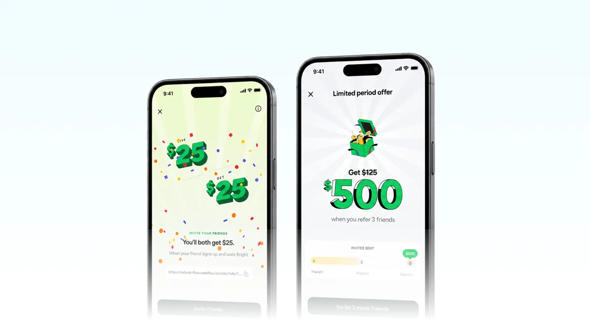
Referral Redesign|Shipped
Rebuilt Bright's referral programme around why users actually refer. Hi-fi signed off.
Monet Cancellation|In Progress
Cancellation flow with a Starter tier, giving churning users a middle option.
Freemium 3.0 → 4.0|Closed
Experience layer controlling what cancelled Basic users see, locked, and what's offered.
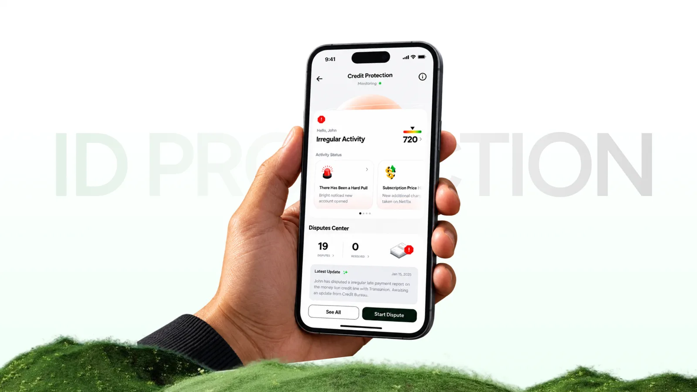
ID Protection|Concept
Researched and pitched a full ID protection product (credit monitoring, breach alerts, dispute flow) to fill a visible competitive gap.
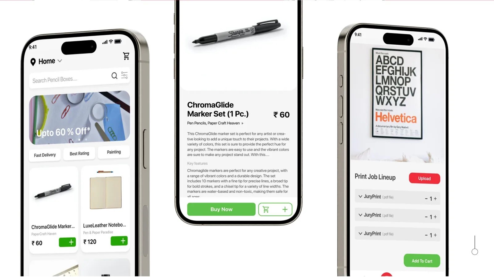
ScribbleShip|UI/UX
Mobile app for on-demand stationery and print ordering in Ahmedabad.
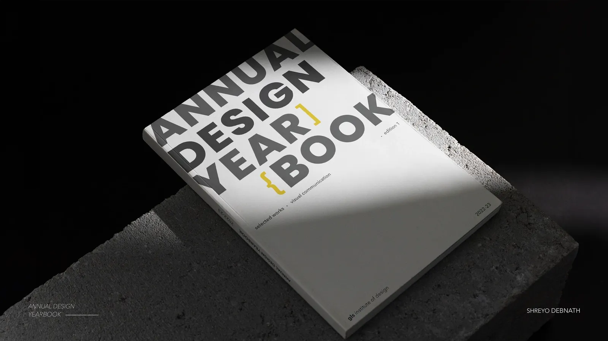
GLS Annual Yearbook|Publication
28cm hardbound yearbook documenting a design institute's creative journey.
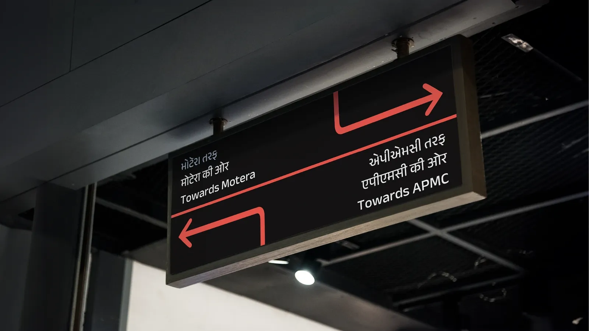
Metro Wayfinding|Systems
Redesigned Ahmedabad Metro signage: wayfinding, typography, spatial ergonomics.
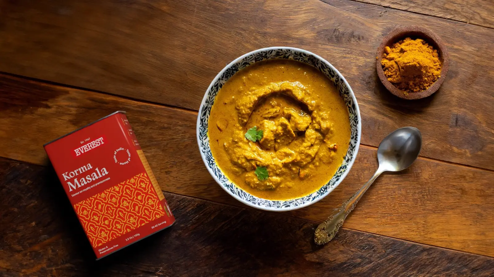
Everest Spices|Packaging
International packaging for India's iconic spice brand. Featured on Packaging of the World.
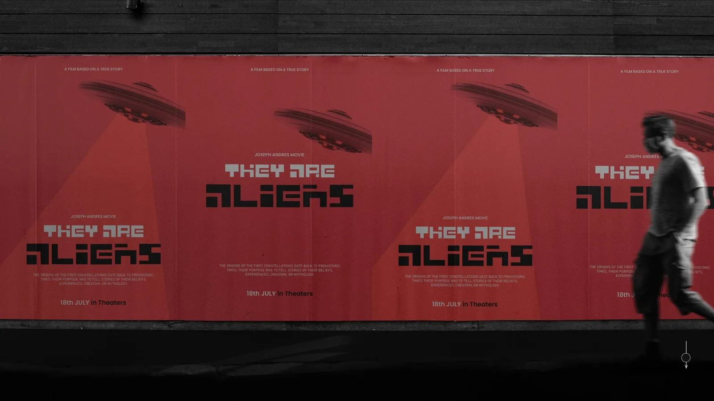
Baux Typeface|Type Design
Futuristic display typeface: 30 characters, alien geometry, zero curves.
Jupiter Banking TVC|Film
Slice-of-life TV commercial for a gen-z neobank, directed and edited.
Logofolio & Brand Marks|Identity
Five years of brand identity work: healthcare, education, esports, government. Each mark with its own story.
More of me outside work